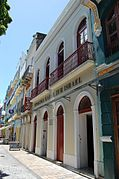
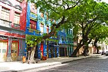
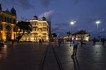
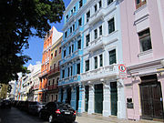
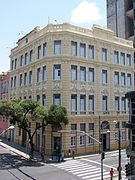
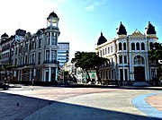
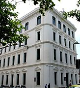
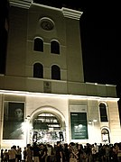

Recife, mais conhecido como Recife Antigo, é um bairro da cidade do Recife, Pernambuco, Brasil que corresponde à parte leste do seu Centro Histórico. Em seu ponto mais oriental, no Porto do Recife, situa-se a Praça Rio Branco – o Marco Zero, margeada pelo encontro dos rios Capibaribe e Beberibe com o Oceano Atlântico.
Verifique algumas imagens dos locais







